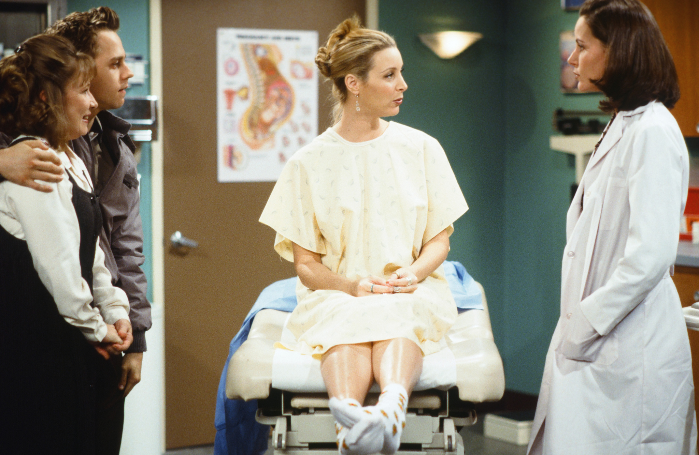
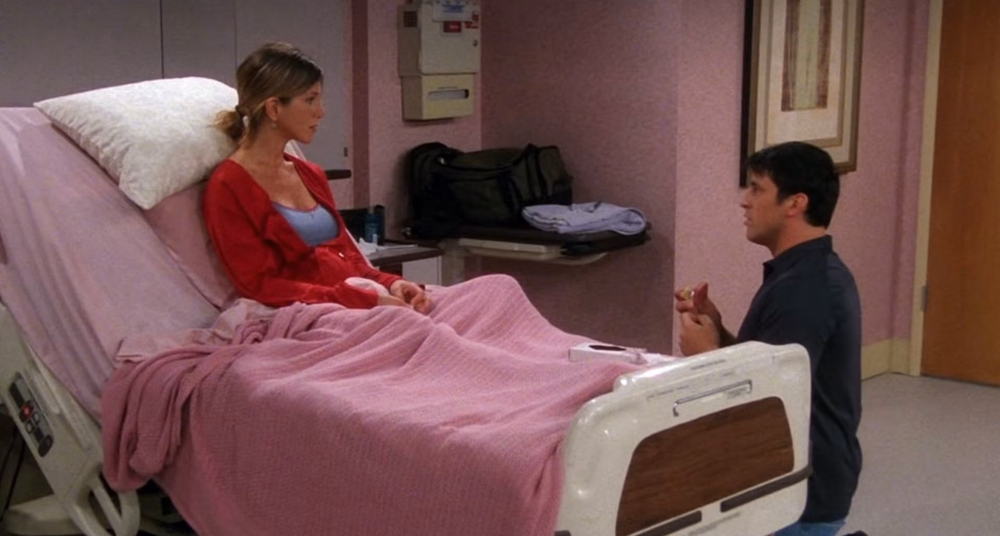
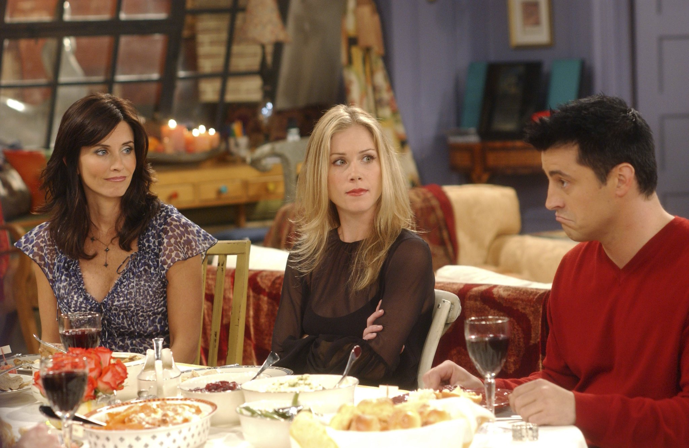
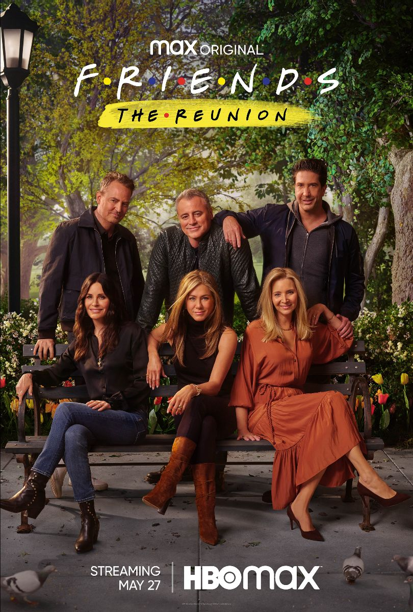

Legacy
Awards
Early on, the Friends stars all submitted themselves as a supporting actors and actresses as some sort of statement. In the first season, only Lisa Kudrow and David Schwimmer were nominated. No one got a nomination for Season 2 of the show. Kudrow was the lone nominee in Season 3, and then she won for her performance in Season 4, where Phoebe serves as a surrogate for her half-brother and his much older wife (she gives birth to triplets). Kudrow was nominated again in Seasons 5-6, but was never nominated again as the cast changed their minds and decided to start submitting themselves for LEAD Actor and Actress.
Jennifer Aniston finally got nominated along with Kudrow for Seasons 5-6 for Best Supporting Actor. In Season 8, though, after Aniston got a juicy season-long plotline with her dealing with being pregnant from a one-night stand with Ross, she decided to go for Lead Actor, and she won. As noted, the rest of the cast ALSO submitted for leads now that the dam was broken, and Matthew Perry and Matt LeBlanc were both also nominated for Lead Actor (but lost). Aniston would be nominated for Best Lead Actor for the next two seasons, as well, as would Matt LeBlanc (whose character, Joey, had a juicy – if bizarre – romance plot with Rachel). Courteney Cox was the only Friends cast member never to get a single Emmy nomination for the series.
In Season 9, Christina Applegate guest-starred as Rachel’s sister, Amy. Her hilariously off-kilter performance won Applegate her first Emmy for Best Actress in a Comedy Series. Applegate returned in the final season, and earned another nomination.



Influence
Vox stated that Friends had an impact on the creation of other conflictless "hangout sitcoms", with groups of adult friends who are funny and have similar character traits. One example of this is How I Met Your Mother, which The Guardian's TV and radio blog noted also shares its setting (Manhattan) with Friends. Other examples include The Big Bang Theory, New Girl, and Happy Endings.
Friends was parodied in the twelfth season Murder, She Wrote episode "Murder Among Friends". In the episode, amateur sleuth Jessica Fletcher (Angela Lansbury) investigates the murder of Ricki Vardian (Cindy Katz) a producer for Buds, a fictional television series about the daily lives of a group of city friends. The episode was devised after CBS moved Murder, She Wrote from its regular Sunday night timeslot to a Thursday night timeslot directly opposite Friends on NBC; Angela Lansbury was quoted by Bruce Lansbury, her brother, and Murder, She Wrote's supervising producer, as having "a bit of an attitude" about the move to Thursday, but he saw the plot as "a friendly setup, no mean-spiritedness." Jerry Ludwig, the writer of the episode, researched the "flavor" of Buds by watching episodes of Friends.
The Reunion
Friends: The Reunion is a 2021 reunion special of the American television sitcom Friends, and the sitcom's first feature-length film. The special was hosted by James Corden and executive produced by the show's cocreators, Marta Kauffman and David Crane, Kevin S. Bright, the show's main cast, and Ben Winston (who also directed the special). The special premiered on HBO Max on May 27, 2021. The special sees the main cast revisit the sets of the original show (such as the Friends' apartments, the Central Perk coffee shop, and the signature water fountain), meet with guests who appeared on the show as well as celebrity guests, do table reads and re-enactments of Friends episodes, and share behind-the-scenes footage. It was Matthew Perry's final on-screen appearance before his death in 2023.
In November 2019, Warner Bros. Television was developing a Friends reunion special for their new streaming service, HBO Max. The special would feature the whole cast and co-stars. In February 2020, an unscripted Friends was commissioned with all original cast and co-creators returning.
The special was filmed in Burbank, California, at Stage 24, also known as "The Friends Stage" at Warner Bros. Studios, where Friends had been filmed since its second season.
-

-

-

Wealth and Income
No one in the Friends cast was a household name in the show’s first season. As such, they each reportedly made $22,500 per episode of Season 1, or $540,000 each for all of Season 1.
Seasons 7 and 8 brought major pay raises to the Friends cast, thanks to their stellar ratings and “Must See TV” status. Each cast member went from making $125,000 per episode in Season 6 to pocketing a staggering $750,000 per episode in Seasons 7 and 8. Each season had 24 episodes, meaning Aniston, Cox, Kudrow, LeBlanc, Perry and Schwimmer each took home $36 million total.
In February 2002, the Friends cast famously negotiated $1 million per episode for Seasons 9 and 10, making Kudrow, Cox and Aniston the highest-paid women on TV ever at that time. Adjusted for inflation, it amounts to $1.826 million per episode today.
The entire main cast of Friends makes $20 million per year just from series residuals alone. The math breaks down like this: Friends brings in $1 billion in revenue for Warner Bros. each year from broadcast rights to syndicate reruns. Each member of the cast gets 2 percent of that billion bucks, resulting in all six making $20 million annually.